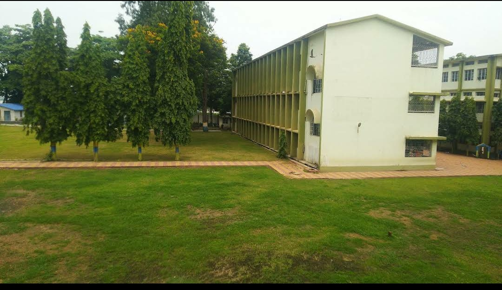

Information about my high school.
"Life is full of unexpected hellos and goodbyes", During my high school it's a completely true.
I have completed my intermediate from DAV Public School, NIT campus and it is one of the most prestigious schools in my locality.
During my high school, I have learned a lot of new things, especially in the field of computer and physics later it becomes of the most favorite subjects.
During my high school, I have participated in a lot of events like Ojass (Official tech fest of NIT Jamshedpur), Esctascy (Annual tech fest of DAV bistupur) and several others.
There's a lot of unforgettable memories and several regrets, but still I love my high school.